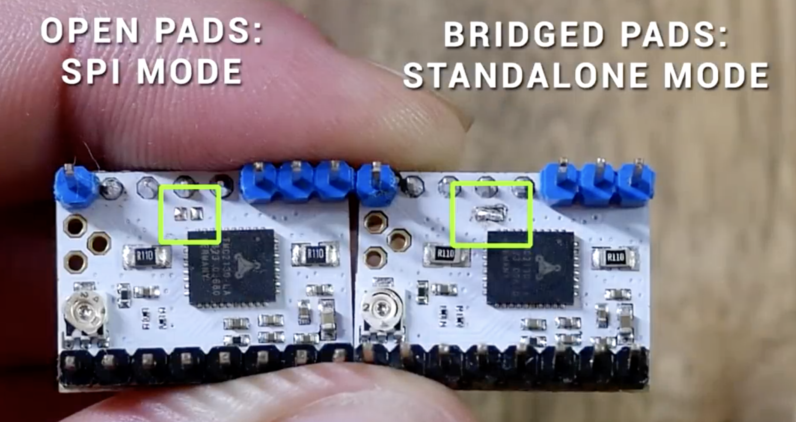
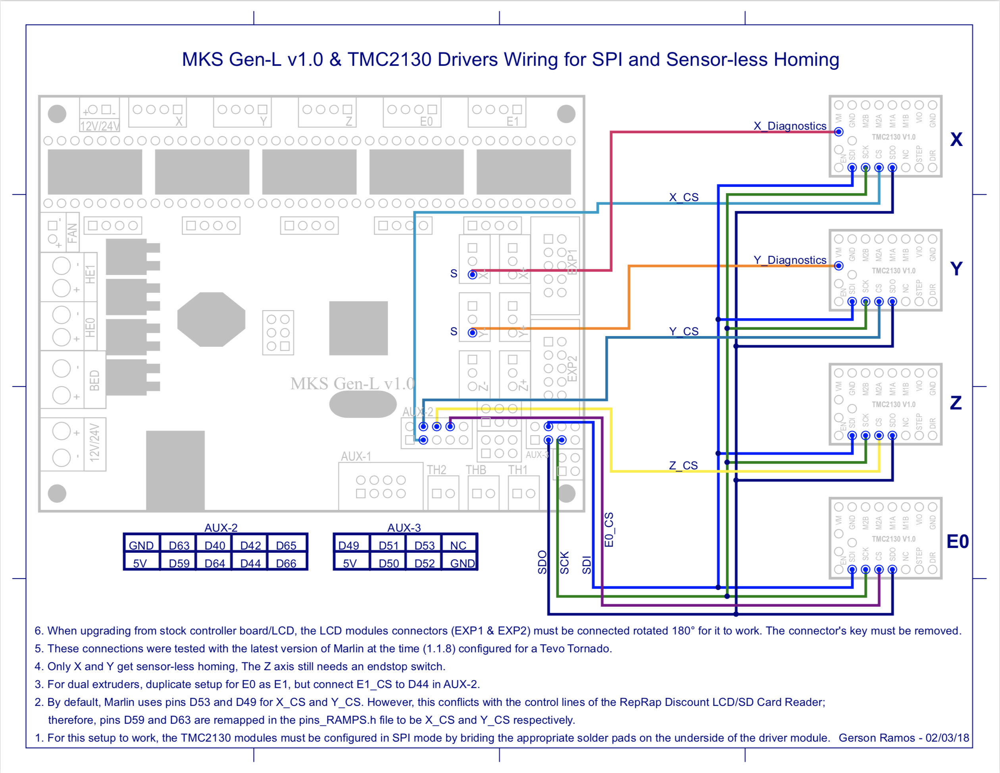
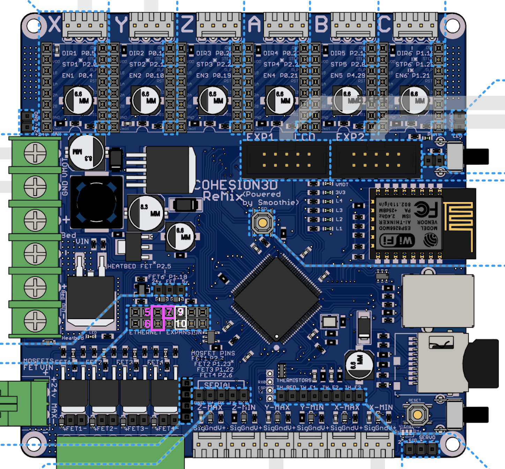

Marlin2.0 bugfix + Cohesion3D-remix 上使用 TMC2130 驱动
文章目录
TMC2130 是一款非常有趣的步进电机驱动，最吸引我的地方是”失速检测” （Stall-detection) 功能，以及由此而来的”无传感器归零” （Homeless-sensing). 对我这个电路外行，也只有在这块驱动芯片发布多年，各种视频、资料都齐备之后，才有机会尝试.
由于家里有很多块定制的 C3D-remix 主板1，再加上最近一两年一直折腾小号的 CoreXY 机器使用的就是这块主板，因此我决定先买几块 2130 驱动，用这块主板试验一下. 2
注意：要使用 TMC2130 的这些功能，需要开启它的 SPI 模式，在有些驱动板上，这个模式是被禁用的，需要去掉一块焊锡才可以开启。

软件准备
PlatformIO 要安装 TMC2130Stepper 的库文件(by teemuatlut). 直接搜索并安装即可
主板通电设置 TMC2130 工作电压（此步骤先略过）
固件设置的更改：
- 在 Configuration.h 中若只在 X, Y 轴使用 TMC2130 ，则更改如下语句
#define X_DRIVER_TYPE TMC2130 #define Y_DRIVER_TYPE TMC2130- 在 Configuration_adv.h 中，需要开启 Software SPI 模式，将 TMC_USE_SW_SPI 前的注视取消，如下
/** * Use software SPI for TMC2130. * Software option for SPI driven drivers (TMC2130, TMC2160, TMC2660, TMC5130 and TMC5160). * The default SW SPI pins are defined the respective pins files, * but you can override or define them here. */ #define TMC_USE_SW_SPI另外开启 debug 功能：使用 M122 命令
/** * Enable M122 debugging command for TMC stepper drivers. * M122 S0/1 will enable continous reporting. */ #define TMC_DEBUG- 在 pins_COHESION3D_REMIX.h 中已经定义好了使用 GPIO pins 作为与 TMC2130 驱动板进行 SPI 通信所需要的端口，端口定义如下：
// // Default pins for TMC software SPI // #if ENABLED(TMC_USE_SW_SPI) #ifndef TMC_SW_MOSI #define TMC_SW_MOSI P1_16 // Ethernet Expansion - Pin 5 #endif #ifndef TMC_SW_MISO #define TMC_SW_MISO P1_17 // Ethernet Expansion - Pin 6 #endif #ifndef TMC_SW_SCK #define TMC_SW_SCK P1_08 // Ethernet Expansion - Pin 7 #endif #endif- 在 pins_COHESION3D_REMIX.h 中还定义好了 X, Y 的 CS pin，如下
#define X_CS_PIN P1_10 // Ethernet Expansion - Pin 9 #define Y_CS_PIN P1_09 // Ethernet Expansion - Pin 10- 注意：要注释掉 pins_COHESION3D_REMIX.h 中的 Ethernet pins:
/* // // Ethernet pins // #define ENET_MDIO P1_17 #define ENET_RX_ER P1_14 #define ENET_RXD1 P1_10 #define ENET_MOC P1_16 #define REF_CLK P1_15 #define ENET_RXD0 P1_09 #define ENET_CRS P1_08 #define ENET_TX_EN P1_04 #define ENET_TXD0 P1_00 #define ENET_TXD1 P1_01 */
硬件准备
参考 thingiverse 上 MKS Gen L 的连线图，如下 
Cohesion3D-Remix 主板上使用了网络接口的 3 个 pin, 来实现主板和 TMC2130 驱动的 SPI 通信，所用的 3个 pin 为
这些接口对应的功能见下表
| PIN # | PORT # | ON BOARD PORT NAME | FUNCTIONALITY | TMC2130 Pin |
|---|---|---|---|---|
| 5 | P1.16 | ENET_MDC | MOSI | SDI |
| 6 | P1.17 | ENET_MDIO | MISO | SDO |
| 7 | P1.08 | ENET_CRS | SCK | SCK |
| 9 | P1.10 | ENET_PIN | X_CS_PIN | X_CS PIN |
| 10 | P1.09 | ENET_PIN | Y_CS_PIN | Y_CS PIN |
- TMC2130 上对应的 pin 的位置见 MKS Gen L 的连线图。
上电测试
- 编译好固件，上传到 C3D 的 SD 卡上，重启机器后，可以用 M122 命令查看当前 TMC2130 的状态，我的显示状态如下：
>>> M122
SENDING:M122
X Y E
Enabled false false false
Set current 800 800 800
RMS current 795 795 795
MAX current 1121 1121 1121
Run current 25⁄31 25⁄31 25⁄31
Hold current 12⁄31 12⁄31 12⁄31
CS actual 12⁄31 12⁄31 12⁄31
PWM scale 0 0 0
vsense 1=.18 1=.18 1=.18
stealthChop false false false
msteps 16 16 16
tstep max max max
pwm
threshold 0 0 0
【mm/s】
OT prewarn false false false
off time 3 3 3
blank time 24 24 24
hysteresis
-end -1 -1 -1
-start 1 1 1
Stallguard thrs 0 0 0
DRVSTATUS X Y E
stallguard X X
sg_result 143 115 0
fsactive
stst X X X
olb
ola
s2gb
s2ga
otpw
ot
Driver registers:
X 0x81:0C:00:8F
Y 0x81:0C:00:73
E 0x80:0C:00:00
Testing X connection… OK
Testing Y connection… OK
Testing E connection… OK
注意，正常情况下，Driver 应该可以注册到不同的地址，如果地址相同，可能是初始化出现了问题，我的解决办法是切断打印机电源，然后重新上电。
- 令人意外的是，stealth chop 模式并没有启动。起初，我以为是固件设置问题，后来才发现，stealth chop 模式为否，是因为 EEPROM 中存储的 stepper mode 并不是 stealth chop. 解决办法是用 M569 命令；这个命令可以独立开启某个电机的 stealth chop 模式。
M569 S1 Z E
这句话的意思是在 Z 和 E 轴开启 stealth chop 模式. 开启后，别忘了用 M500 命令保存。
从现在开始，我们就正式进入智能驱动的神奇世界了！
- Cohesion3d-Remix 主板可以在某宝买到，见某宝链接 https://item.taobao.com/item.htm?spm=a230r.1.14.1.4acd3e70BaS7Zw&id=558549657644&ns=1&abbucket=10#detail [return]
- 本文参考了 YouTube 视频：TMC2130 Guide - stepper motors driver upgrades part 3 - Sensorless homing https://www.youtube.com/watch?v=OUadiW5QLBE [return]
文章作者 XL
上次更新 2019-03-21